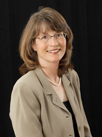

Elizabeth Kurr joined McMahon Serepca LLP in 2013, bringing 10 years of business and securities law experience. Ms. Kurr brings her large firm background, training, expertise and exceptional service to the clients of our Corporate Practice. She leverages her years of experience as an auditor at global accounting firm, Arthur Andersen, as a private practicing attorney at preeminent national corporate and securities law firm, Wilson Sonsini Goodrich & Rosati, and as an in-house attorney at Fortune 500 global technology leading OEM, Sun Microsystems, to advise, counsel and represent investors, founders, companies and their stakeholders in all aspects of Business Law.
Ms. Kurr has extensive experience representing parties in mergers and acquisitions, structuring, negotiating, documenting and executing transactions, managing due diligence, and complying with applicable California and federal laws, including:
Ms. Kurr has broad experience representing companies, venture funds and underwriters in private and public equity and debt financings, structuring and negotiating transactions, analyzing company capitalizations, preparing articles of incorporation, obtaining board of director and shareholder approvals, advising on shareholder rights and board fiduciary duties, conducting due diligence, executing closings, and complying with applicable state and federal securities laws, including:
Ms. Kurr also has years of experience advising public companies in securities law matters, such as Sun Microsystems, Wavefront Technologies and ProBusiness, including ‘34 Act compliance, material disclosures (earnings, material transactions, analyst conferences), corporate governance (director independence analysis, Board and committee structure and charters, company policies, including insider trading, conflicts of interest, document retention, confidentiality), executive agreements (including change in control, retirement and employment letters), debt agreements and compliance, banking agreements and stock plan administration.
Ms. Kurr further brings her extensive experience and perspective from years of working as a CPA, in audit and litigation consulting:
Ms. Kurr graduated from University of San Francisco School of Law in 1992, with honors, and University of Illinois in 1986 with a B.S. in Accountancy, with honors.
She is a co-founder of BE Good Company, a small, family-owned business in the toy industry, and takes an active role in her children’s participation in 4-H raising animals, as the 4-H Community Leader, in her children’s school, including as past PTA President and Treasurer, and in her church, including as past Director of Youth Education.